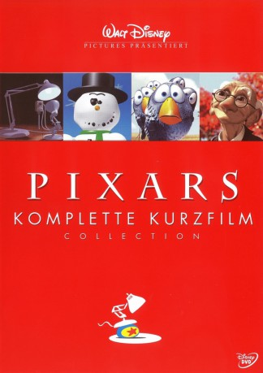

#6075 Pixars komplette Kurzfilm Collection Volume 1
 
 IMDB-Wertung: 8.0 / 10
IMDB-Wertung: 8.0 / 10  Metascore: 0
Metascore: 0 
Disney und Pixar laden ein zur Entdeckung dieser 10 Kurzfilme von den kreativen Machern von "Toy Story", "Die Monster AG", "Findet Nemo" und vielen anderen Filmen. Mit revolutionärer Animationstechnik, unvergesslicher Musik und Charakteren, die man sofort ins Herz schließt, haben diese glanzvollen Kurzfilme Furore gemacht und die Standards des modernen Trickfilms verändert.
Jahr: 2007
Dauer: 55 Minuten
FSK:
Land: USA Studio: Walt Disney Studios Home EntertainmentTonspuren: DD2.0 - ,
Untertitel:
Auflösung: 1080p (1920x1040) Größe: 4474 MB
Genre: Sci-Fi, Komödie, Fantasy, Animation/Trick, Familie
Regisseur: John Lasseter
Drehbuch: Christopher Kyle
Soundtrack:
Darsteller:
Datei: X:\Kinder Disney HD\Pixars Kurzfilm Collection\Pixars komplette Kurzfilm Collection Volume 1 (2007, FSK, 1920x1040).mkv seit 28.04.2017
Festplatte: Kinder-Filme+Trick
 Alle Filme aus Gruppe 'Kinder Disney HD\Pixars Kurzfilm Collection'
Alle Filme aus Gruppe 'Kinder Disney HD\Pixars Kurzfilm Collection'